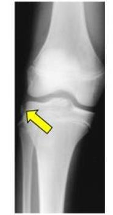

Seta amarela aponta o fragmento; quatro nomes são investigados. Especialistas dizem que o pedaço de osso é pequeno, mas o que ele denuncia, não.
Uma radiografia simples do joelho, sem história clínica nenhuma ao lado, foi a questão 103 da prova do TEOT 2025. A pergunta cabia numa linha. A resposta exigia saber onde cada achado costuma aparecer.

Flagrante
A seta aponta o suspeito. Radiografia original da prova.
Pág. 2 a pergunta · 3 classificados · 4 o veredito · 5 para a prova
Joelho em AP. Repare em que osso a seta encosta e de que lado.
Comente a sua letra antes de virar a página. Na próxima, os quatro suspeitos publicam o próprio endereço.
Quatro candidatos à vaga de “o que a seta mostra”. Confira o endereço de cada um.
Sesamoide redondinho e de contorno liso, vive dentro do gastrocnêmio lateral. Não é fratura e não tem antecedentes.
Endereço: atrás do côndilo femoral lateralAvulsão causada pela inserção do complexo posterolateral. Quem aparece com ele deve examinar o canto posterolateral.
Endereço: cabeça da fíbulaFragmento fino e alongado, arrancado pela cápsula lateral e pelo complexo anterolateral. Raramente anda sozinho.
Endereço: borda lateral do planalto tibial, logo abaixo da linha articularCalcificação de uma lesão antiga, junto à origem femoral do colateral medial.
Endereço: lado medial, côndilo femoralVolte à radiografia: a seta encosta em qual osso, e de qual lado? Só um endereço confere.
A lasca na borda lateral do planalto tibial é a fratura de Segond, e ela tem forte associação com a lesão do LCA.
É uma pequena avulsão da borda lateral do planalto tibial, logo abaixo da linha articular. Quem arranca o fragmento é a tração da cápsula lateral e do complexo anterolateral, num trauma em rotação interna com varo.
Na radiografia em AP aparece como um fragmento fino e alongado ao lado do planalto lateral, exatamente onde a seta da prova aponta.
O tamanho engana. O valor do achado está na associação: a fratura de Segond tem forte relação com a lesão do ligamento cruzado anterior.
Por isso, diante dela, a investigação não termina na radiografia: é preciso procurar a lesão do LCA e dos meniscos.
Segond → procure o LCA e os meniscos.
Sinal arqueado → procure o canto posterolateral.
Pellegrini-Stieda → lesão antiga do colateral medial.
Fabela → sesamoide normal, liso e redondo. Não é lesão.
Avulsão da borda lateral do planalto tibial é Segond. E Segond lembra LCA.